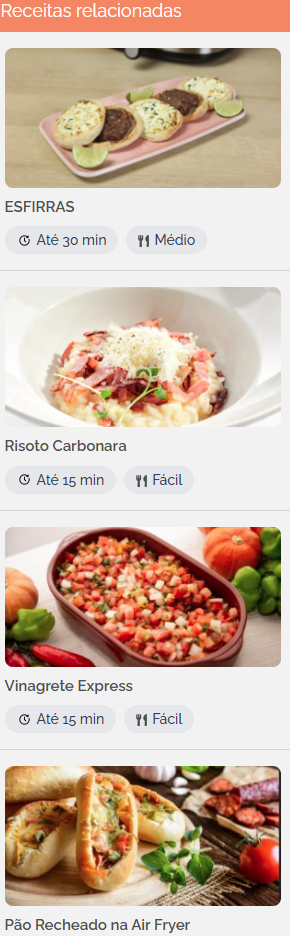
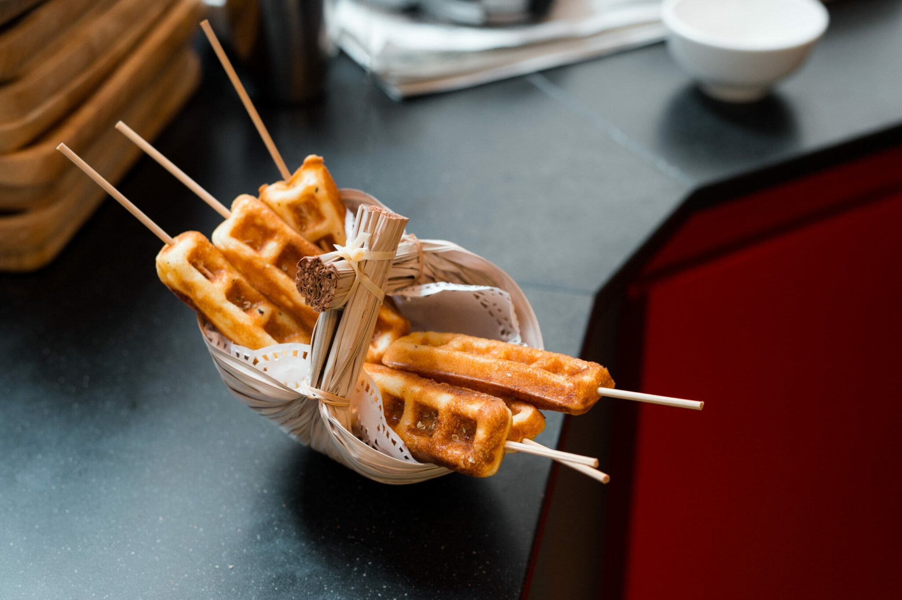

Crepe Suíço


Ingredientes
- 1/2 litro de leite
- 1 colher de sopa de açúcar
- 1 colher de sopa de manteiga
- 2 colheres de sopa de amido de milho
- 1 ovo
- 1/2 colher de chá de sal
- 2 e 1/2 xícaras de farinha de trigo
- 1 colher de sopa de fermento em pó
Modo de Preparo
- Ligue a Crepeira Mondial e deixe aquecer.
- Enquanto isso, coloque todos os ingredientes no Liquidificador Mondial e bata somente até ficar homogêneo.
- Unte as chapas da crepeira com óleo, manteiga, azeite ou desmoldante.
- Coloque um pouco de massa nas cavidades, e posicione os palitos com os recheios, que podem ser os mais variados, desde salsichas, queijos e frios, chocolate, doces…
- Depois coloque mais um pouco de massa sobre os recheios, feche e aguarde ficarem bem dourados.